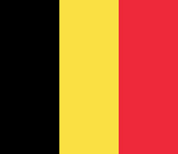
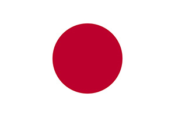
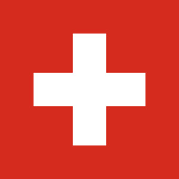

Ольга Морозова, аспирант факультета программирования Нетологии
Это сборник задачек, созданный аспирантом Нетологии Ольгой Морозовой для студентов бесплатного курса «Основы HTML и CSS».
Вы сможете нарисовать несколько флагов, используя только HTML и CSS. У задач может быть несколько способов решения, поэтому я не пишу ответы.
У каждой задачи есть самый простой способ решения и чуть сложнее (со звездочкой *). Гуру верстки могут попробовать решить задачи с двумя звездочками! Все задачки можно решить в
Чем могут быть полезны эти упражнения начинающему верстальщику? Здесь отрабатываются задачи, которые будут попадаться вам и в работе: как оптимизировать код, как найти другое решение, обойти ограничения и сделать универсальный вариант, подходящий к любым условиям.
Успехов! С вопросами, замечаниями и новыми задачами приходите на курс.
Все мы, выросшие на сериале «Теория большого взрыва», знаем, что наука о флагах называется вексиллология. В терминах вексиллологии бельгийский флаг это вертикальный триколор. Флаги многих стран имеют строение триколоров, и если мы разберемся с тем, как рисовать в CSS флаг Бельгии, то справимся и со всеми другими триколорами.
Флаг Бельгии выглядит так:

Между прочим, соотношение сторон у этого флага уникальное: 15(ширина):13(высота). Он почти квадратный. Впрочем, на практике чаще используются полотнища и изображения флага с соотношением сторон 3:2. Попробуйте нарисовать его в Codepen, используя готовую
Это простой вариант. Я уже создала таблицу в HTML, и ее осталось только раскрасить, прописать размеры и границы.
See the Pen Belgique by OlgaMorozova (@OlgaMorozova) on CodePen.
Это вариант посложнее. Нужно сообразить, как раскрасить контейнер, чтобы он выглядел как флаг Бельгии. Изменения в
See the Pen Belgique* by OlgaMorozova (@OlgaMorozova) on CodePen.
Красный круг в центре японского флага символизирует восходящее солнце и отсылает к солнцепоклонческой религии императора, при котором этот флаг появился. Интересно, что в том виде, в каком мы знаем японский флаг сейчас, он появился только пару десятков лет назад. Дело в том, что до 1999 года соотношение сторон флага было другим: 7:10 против нынешних 2:3.
Флаг Японии выглядит так:

Попробуйте нарисовать этот флаг в Codepen, используя готовую
Это простой вариант. Я уже создала разметку в HTML, и ее осталось только раскрасить, прописать размеры и границы.
See the Pen Флаг Японии by OlgaMorozova (@OlgaMorozova) on CodePen.
Это вариант посложнее. Нужно сообразить, как раскрасить контейнер, чтобы он выглядел как флаг Японии. Изменения в
See the Pen Флаг Японии* by OlgaMorozova (@OlgaMorozova) on CodePen.
Швейцарский флаг квадратный. Кроме него, такую форму имеет только флаг Ватикана.
Флаг Швейцарии выглядит так:
Я не даю вам вариантов разметки, потому что их может быть много, и каждый по-своему интересен. Можно сверстать флаг Швейцарии из одного HTML-элемента, а можно другими способами. Какой выберете вы? Таблица, псевдоэлементы? Попробуйте все! (кстати, флаг Швейцарии, сверстанный из одного дива, вовсе не самый сложный вариант. Пока что никто из студентов не справился с задачей: нарисовать флаг Швейцарии на основе таблицы с 4 ячейками)